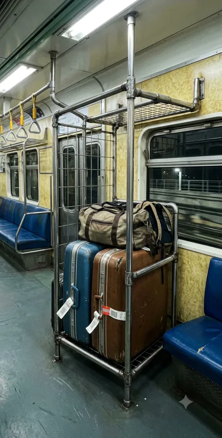
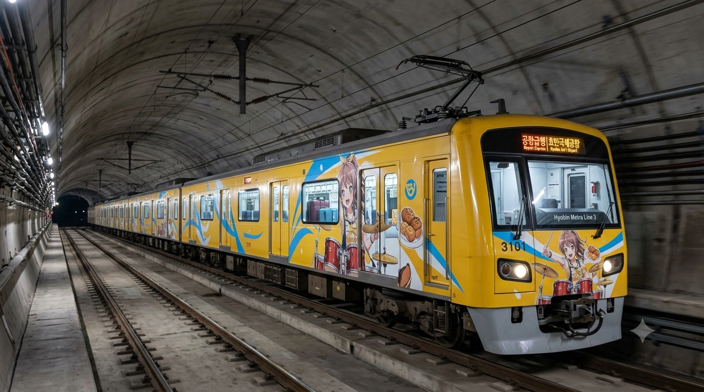
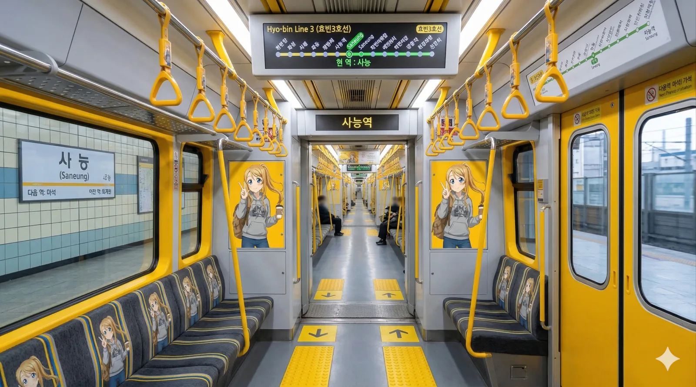
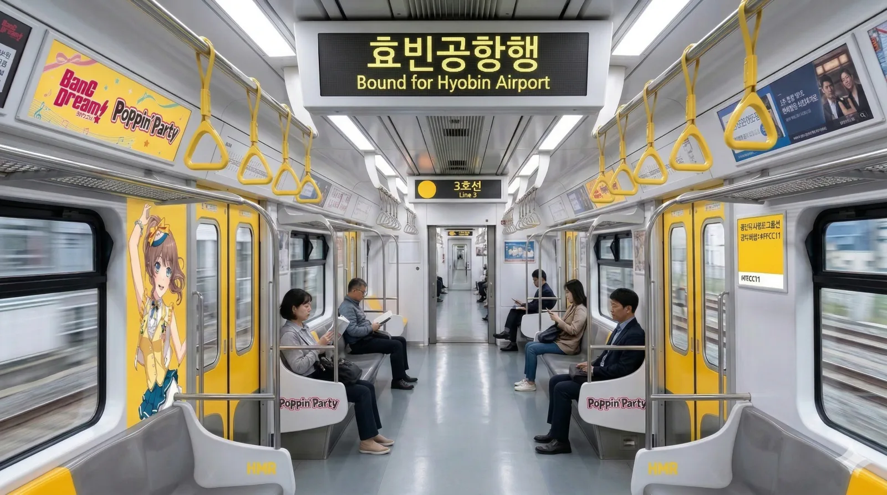
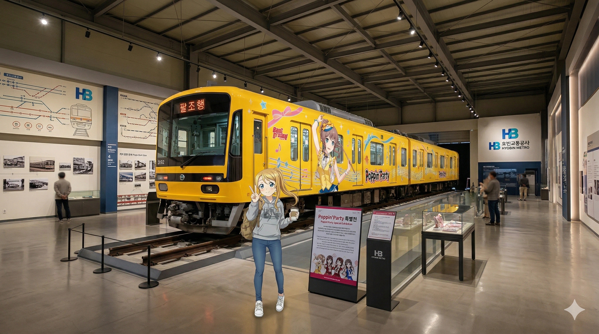

효빈교통공사 3000호대 전동차
1. 개요
"효빈의 하늘길을 여는 노란 날개"
출근시간에 28인치 캐리어 끌고 타도 눈치 안 보이는 유일한 혜자 전철
효빈교통공사가 효빈 도시철도 3호선에서 운용 중인 통근형 전동차이다.
1993년 3호선 1단계 개통과 함께 1세대가 최초 도입되었으며, 이후 2000년대 초반 효빈국제공항 연장에 맞춰 성능이 대폭 업그레이드된 2세대가 대거 추가 도입되었다. 노선 색상은 개나리색(#FFCC11)으로, 효빈시의 활기찬 이미지와 공항으로 훌쩍 떠나는 여행객들의 설렘을 상징한다.
도심을 관통하는 1, 2호선에 비해 절대적인 출퇴근 이용객 수는 다소 적은 편이나, 공항철도 기능을 완벽히 수행하기 위해 객실 내에 대형 수하물 보관소(캐리어 랙)를 별도로 마련했기 때문에 탑승 가능 인원이 줄어드는 점을 상쇄하고자 넉넉하게 7량 1편성으로 도입되었다. 물론 공항에 가는 짐이 없는 평시 구간에서는 그저 널찍하고 쾌적한 운동장일 뿐이다. 누워서 가도 된다
2. 분류
도입 시기 및 목적, 기술적 사양에 따라 크게 1세대, 2세대로 엄격하게 구분한다.
2.1. 1세대 (1993~1994년)
.webp)
- 차량번호: 3001~3015 (총 15편성)
- 제어방식: VVVF-GTO 1호선 1세대랑 똑같이 귀가 찢어지게 시끄러운 발차음이 압권이다
- 특징: 1호선 1세대 차량과 완전히 동일한 각진 박스형 베이스로 제작된 형제 모델이다. 구동 시 특유의 우렁찬 GTO 사이리스터 소음이 지하 터널을 쩌렁쩌렁 울린다. 개통 초기에는 도심 구간만 운행하여 별도의 수하물 공간이 없었으나, 효빈국제공항 연장 이후 "캐리어 놓을 곳이 없다"는 여행객들의 원성이 하늘을 찌르자 부랴부랴 휠체어석과 일반 좌석 일부를 뜯어내고 철봉을 용접해 캐리어 보관함으로 마개조를 감행했다. 단열재 노후화로 외풍이 심하며 승차감도 덜컹거리는 편이다. 3001편성은 그 역사적 가치를 인정받아 퇴역 후 효빈교통공사 철도박물관 야외 전시장에 고이 모셔져 있다.

2.2. 2세대 (2003~2004년)

- 차량번호: 3016~3040 (총 25편성)
- 제어방식: VVVF-IGBT
- 특징: 효빈국제공항 완전 연장 개통에 대비하여 대량으로 도입된 최신형(?) 주력 차량이다. 일명 '동글이' 디자인으로 불리며, 유선형 전두부를 채택하여 공기저항을 줄였다. 제어 소자도 IGBT로 변경되어 1세대에 비해 귀가 편안할 정도로 소음이 혁신적으로 줄어들었고 발차도 매우 부드럽다. 이전 세대의 땜빵식 수하물칸과 달리, 차량 설계 단계부터 제대로 된 2단 캐리어 랙(Luggage Rack)이 객실 중앙 쪽에 빌트인으로 장착되어 있어 무거운 짐을 가진 여행객들에게 쾌적하고 안전한 이동을 보장한다. 특히 이 2세대 차량 중 일부는 빨간색 LED로 빛나는 '공항급행 | 효빈국제공항' 행선을 달고 주요 환승역만 정차하며 질주하는 특급 임무를 수행한다.[2]전면부 공항급행 LED 디스플레이 참고[cite: 7]
3. 배속 및 운용
팔조차량사업소 (Paljo Depot)
"박물관이 살아있는 3호선의 심장"
3호선의 메인 기지로 전동차들의 유치, 경정비 및 중정비를 모두 총괄 담당한다. 기지 정문 입구 쪽 자투리 부지에 효빈교통공사 철도박물관이 웅장하게 자리 잡고 있어 주말마다 꼬마 철덕들과 사진을 찍으러 온 가족 단위 관람객들로 바글바글하다. 박물관 구경을 하다 보면 창문 너머로 정비 중인 진짜 3000호대 전동차들의 쌩얼(?)을 라이브로 직관할 수 있는 훌륭한 덕질 스팟이기도 하다.
주길차량사업소 (Jugil Depot)
"비행기와 전철이 공존하는 외곽 기지"
공항 인근 노선 연장에 따라 신설된 외곽 기지로, 주로 심야 주박과 일상 점검을 맡고 있다. 활주로와 굉장히 가까워 거대한 여객기가 이착륙하는 굉음을 기지 내에서 생생하게 들을 수 있다. 밤에는 인적이 너무 드물고 안개가 자주 껴서 기지 내 폐선로 구역에 귀신이 산다는 흉흉한 소문과 괴담이 신입 기관사들 사이에서 돌기도 한다.
4. 여담
.webp)
- 7량의 미학: 6량은 수송력이 아쉽고 8량은 예산 낭비라는 치밀한 계산 끝에, 넉넉한 수하물 공간 확보를 위해 7량 편성이라는 다소 변태적인(?) 규격을 고수하고 있다. 이로 인해 승강장 스크린도어 번호 체계(1-1 ~ 7-4)가 다른 노선(8량, 9량 등)과 달라서, 환승해 온 타 노선 승객들이 8량 위치에서 하염없이 기다리다 열차를 놓치고 멘붕에 빠지는 일이 종종 발생한다.
- 여행의 상대적 박탈감: 쨍한 노란색 전동차 안에 하와이안 셔츠를 입고 커다란 캐리어를 들고 탄 승객들이 많다 보니, 아침 출근길에 다크서클이 턱까지 내려온 채 이 노선을 타게 되면 "나만 빼고 다들 놀러 가는 것 같아 배가 너무 아프다", "당장 사표 쓰고 비행기 타고 싶어진다"는 주변 직장인들의 피눈물 섞인 푸념이 끊이질 않는다.
- 대학생들의 엠티 셔틀: 노선 선형이 효빈복지대학교 등 주변 주요 대학들을 꼬치 꿰듯 절묘하게 훑고 지나가기 때문에, 학기 중에는 전공 서적을 든 통학생들로 미어터지지만 방학만 되면 공항 가는 승객 외엔 텅텅 비는 극단적인 수요 패턴을 보인다. 특히 엠티(MT) 시즌에는 기타와 술박스를 든 대학생 무리가 점령하여 공항철도가 아니라 청춘열차로 돌변한다.
4.1. 특별 래핑 열차
3호선은 공항 이용객과 외국인 관광객들에게 효빈시의 첫인상을 심어주는 핵심 관문 노선인 만큼, 마스코트 캐릭터를 적극적으로 활용한 화려한 테마 열차가 성황리에 운행 중이다. 내부 인테리어까지 작정하고 꾸며놓아 철덕들의 셔터 세례를 받고 있다.



- 박라미 테마 래핑 열차: 3호선 공식 마스코트이자 엽월대 경영학과(F학점 전설)에 재학 중인 열혈 철덕 박라미 테마의 특별 래핑 열차다. 차체 외부는 물론 객실 내부까지 라미의 존재감으로 가득 채워져 있다.[6]박라미 래핑 열차 특징[cite: 8] 객실 내부에 들어서면 도어 창문 양옆과 좌석 측면 유리벽마다 커피를 들고 브이를 그리는 힙한 라미의 대형 일러스트가 붙어 있어, 어디서든 인증샷을 남기기 좋다.[7]객실 내부 일러스트 위치 및 포즈[cite: 8] 좌석 시트마저 단조로움을 탈피하여 어두운 바탕에 개나리색 라인과 라미의 미니 캐릭터가 패턴으로 박힌 전용 특주 직물 시트를 사용했다.[8]특주 직물 시트 패턴[cite: 8] 수하물 거치대(랙) 쪽에는 "짐은 이곳에 예쁘게 보관해 주세요~ (하트)"라는 문구가 적혀있는데, 이를 무시하고 통로를 짐으로 막는 빌런 승객이 나타나면 곧바로 라미의
사아야식 흑화무서운 경고 안내방송이 송출된다는 전설이 있다. 천장의 큼지막한 구형 풀컬러 LED 안내기에는 다국어로 정차역 정보가 정밀하게 표출되어 공항 이용객들의 극찬을 받는다.[9]LED 안내기 다국어 표출[cite: 8] - 야마부키 사아야 (뱅드림!) 콜라보 열차: 3호선의 상징색인 개나리색(#FFCC11)과 Poppin'Party의 드럼 담당이자 '야마부키 베이커리'의 간판딸 야마부키 사아야의 퍼스널 컬러가 0.1%의 오차도 없이 완벽하게 일치하여 탄생한 전설의 콜라보 차량이다.[10]퍼스널 컬러 일치 콜라보레이션[cite: 7] 차체 외부 측면 전체를 거대한 캔버스 삼아 드럼 세트를 치고 있는 사아야와 갓 구운 빵바구니 일러스트, 그리고 스포티한 의상을 입고 활짝 웃는 멤버들의 래핑이 시원하게 도배되어 있어 멀리서 진입할 때부터 미친 존재감을 뿜어낸다.[11]차체 외부 래핑 디테일[cite: 7] 객실 내부 상단 광고판 구역은 일반 상업 광고 대신 화사한 핑크색 바탕의 'BanG Dream! Poppin'Party' 로고가 차지하고 있으며, 도어 측면 유리에는 무대 의상을 입은 사아야의 전신 일러스트가 부착되어 팬들의 심장을 폭행한다.[12]객실 내부 상단 및 도어 래핑[cite: 9] 또한 좌석 팔걸이 하단에도 'Poppin'Party' 타이포그래피를 섬세하게 새겨넣어 디테일의 끝판왕을 보여준다.[13]좌석 하단 타이포그래피[cite: 9]
- 이 열차가 종착역인 효빈국제공항역에 도착할 때면, 천장 대형 전광판에 '효빈공항행 Bound for Hyobin Airport'이 뜨는 동시에 뻔한 안내방송 배경음 대신 Poppin'Party의 파워풀한 드럼 필인 사운드가 쩌렁쩌렁하게 울려 퍼져 출국을 앞둔 여행객들의 심박수를 마구 폭발시킨다.[14]천장 대형 전광판 및 사운드 기믹[cite: 9] 또한, 이 열차에서도 "어디선가 방금 오븐에서 꺼낸 달콤한 초코 소라빵 냄새가 난다"는 집단 환각 괴담이 철덕 커뮤니티에 꾸준히 제보되고 있다. 그냥 진짜로 효빈국제공항역 안에 유명 프랜차이즈 빵집이 입점해 있어서 송풍구를 타고 들어오는 냄새일 확률이 99.9%다.
▶ [펼치기/접기] 3호선 마스코트 '박라미' 상세 설정 (Park Rami / 朴喇美)
"이건... 도시의 맥박이야." (신호대기 중인 열차를 보며)
"F학점? 훗, 그건 Framing의 F야."
"사능동 식빵의 결이... 내 인생보다 부드러워."
효빈 도시철도 3호선의 공식 마스코트. 만 21세 (2004년생), ENTJ (대담한 통솔자). 3호선 최초 개통일인 2월 9일이 생일이다. 효빈시 명문 사립대인 엽월대학교 경영학과 2학년에 재학 중인 대학생이다. 3호선의 이미지 컬러인 노란색과 어울리는 밝은 금발(염색)이 특징이며, 화려한 외모와 지적인 이미지로 쿨뷰티 퀸카를 자처하지만, 실상은 "덕질이 수업을 이기는" 노답 감성파다.
1. 성격 및 학업: 감성과다 쿨뷰티 & F학점의 요정
표면적으로는 효율을 중시하는 경영학도 같지만 '연출'과 '브랜딩'에 심하게 집착해 평범한 지하철 사진에도 오글거리는 카피를 붙인다. 철덕 레벨 B+(생활철도·탑승 덕후)로 뇌 용량의 90%를 철도 덕질과 출사에 할애하다 보니 학점은 GPA 3.0(학사경고 방어선)을 아슬아슬하게 맴돈다. 특히 1학년 1학기 때 신형 전동차 시운전을 보러 전공필수(경영통계학) 기말고사를 째고 F학점을 맞은 뒤 "내 성적표의 F는 Fail이 아니라 Framing의 F다"라는 명언을 남겼다. 학사경고 통지서마저 마스킹 테이프로 예쁘게 다꾸(다이어리 꾸미기)해서 "위기는 기회다★"라며 인스타에 올리는 진정한 멘탈갑.
2. 특수 설정 & 트리거
- 🎙️ 유이 내레이션 모드: 조별 과제 발표 시, 일본판 담당 성우인 이시카와 유이 특유의 차분하고 감성적인 독백 톤을 사용한다. "경영이란... 마치 궤도를 달리는 열차와도 같습니다..." 라고 읊조리면 교수님마저 경청하게 만드는 기적을 보이지만, 내용이 없어서 학점은 C+ 나온다.
- 🌅 골든 아워의 망령: 해가 지는 '골든 아워'나 비가 오는 날이면 "이 빛깔... 오늘만 찍을 수 있어!"라며 출석을 부르든 말든 강의실을 박차고 나간다. 인스타엔 인생샷이 가득하지만 출석 점수는 바닥을 긴다.
- 🍞 사능동 빵집 순례자: 도도한 척하지만 북구 사능동의 오래된 로컬 빵집 식빵 앞에선 무장해제된다. 시험 기간 등 스트레스받는 날엔 빵을 사들고 3호선 종점까지 왕복하며 마음의 위안을 얻는다.
3. 인간 관계 & 정치 성향
- 임세하 (7호선): "모터 구경하느라 F 받았다"는 세하와 "프레이밍 잡느라 F 받았다"며 부둥켜안고 현실도피하는 영혼의 F학점 듀오.
- 전노아 (빈효선): 사내 주류인 효빈대 카르텔을 견제하는 '비(非)효빈대 연합' 동지. 노아가 조별과제로 고통받을 때 PPT를 예쁘게 만들어주는 츤데레다.
- 하루빈 (2호선): 고등학교 직속 선배. 하루빈이 "라미야, 학점 챙겨야지?"라고 팩폭을 날리면 유창한 4개 국어로 받아치는 티키타카를 시전한다.
- 정치 성향: 사진 찍기 좋은 '골든 아워 셔터 찬스'를 잦은 열차 지연으로 방해했던 윤대환 전 시장을 극도로 혐오하며, 반대로 애니메이션 페스티벌(HAF) 등을 지원해 도시를 덕질하기 좋은 환경으로 만들어준 박효빈 시장은 맹렬히 지지한다. 덕후에겐 덕질 환경 보장이 최고의 복지다.
4. 기타 여담
4개 국어(한국어, 영어, 일본어, 중국어)에 능통해 과거 효빈국제공항역 안내 센터에서 알바를 한 적이 있다. 외국인 관광객들에게 폭발적인 인기를 끌었으나, 근무 중 지나가는 비행기를 찍으러 자리를 비웠다가 잘렸다(...). 안경을 쓰면 지적 쿨뷰티 미모가 200% 상승하지만 본인은 렌즈를 선호한다. 팬들의 열화와 같은 성원 덕에 넨도로이드 굿즈에 안경 파츠가 특별 포함되었다.
5.2. 운행 일화 및 사건사고
1. 1세대 수하물칸 캐리어 대도미노 폭탄 사태
2018년 여름 휴가철 피크 시즌, 공항으로 향하던 1세대 3001편성이 선로에 무단 침입한 야생 고라니를 피하고자 급제동을 걸면서 발생한 아찔하면서도 웃픈 참사이다. 당시 1세대 차량은 정식 설계된 수하물 랙이 아니라, 일반 좌석을 강제로 뜯어내고 쇠파이프 몇 개만 대충 용접해 놓은 땜빵식 보관함을 사용 중이었다. 시속 70km로 달리던 열차가 급브레이크를 밟자, 캐리어를 고정할 안전바조차 없던 임시 보관함에서 28인치 대형 하드 캐리어 수십 개가 일제히 통로로 쏟아져 나와 앞쪽으로 무서운 속도로 굴러가기 시작했다. 볼링공처럼 돌진하는 캐리어 파도에 서 있던 승객들이 추풍낙엽처럼 쓰러지며 도미노 현상을 일으켰고, 객실은 순식간에 각양각색의 짐가방과 비명을 지르는 여행객들로 뒤엉킨 아수라장이 되었다. 다행히 중상자는 없었으나 부서진 캐리어 보상 문제로 공사는 막대한 비용을 지출해야 했고, 이는 2세대 차량에 무조건 튼튼한 2단 고정식 캐리어 랙을 기본 장착하게 만든 뼈아픈 교훈이 되었다.
2. 철도박물관 사아야 래핑 열차와 라미 등신대 인증샷 대란
2026년 봄, 효빈철도박물관 야외 전시장에 보존된 Poppin'Party 래핑 사양의 3001호 차량 앞에서 발생한 전대미문의 팬덤 정체 현상이다.[15]철도박물관 야외 전시 차량 및 래핑 현황[cite: 6] 3호선 마스코트 박라미가 회색 후드티에 청바지를 입고 한 손에 커피를 든 채 브이를 하며 찍은 공식 일러스트 샷의 배경이 바로 이 전시 차량 앞이라는 사실이 SNS에 퍼지면서 사건이 시작되었다.[16]박라미 공식 일러스트 착장 및 포즈[cite: 6] 주말이 되자 라미와 똑같은 후드티와 청바지 코스프레를 한 수백 명의 철덕과 뱅드리머들이 박물관으로 몰려들어, 라미 등신대 바로 옆에서 한 치의 오차도 없는 완벽한 구도의 인증샷을 찍기 위해 끝없는 대기열을 형성했다.[17]등신대 위치 및 구도[cite: 6] 문제는 한 명당 사진을 수십 장씩 찍어대며 포즈를 잡는 바람에 줄이 전혀 줄어들지 않았고, 결국 박물관 측이 급기야 '1인당 촬영 시간 30초 타이머 제한'이라는 강수를 두고 보안 요원까지 배치하여 컷 사인을 외치는 진풍경이 벌어졌다. 아이돌 팬싸인회를 방불케 하는 살벌한 통제였다
3. 공항급행 사아야 열차 터널 역주행 오인 대소동
2025년 10월, 공항급행 임무를 띠고 지하 터널 구간을 전속력으로 질주하던 3101편성 야마부키 사아야 래핑 열차에서 발생한 집단 착각 해프닝이다.[18]공항급행 LED 표시 3101편성 주행[cite: 7] 급행열차 특성상 무정차 통과역을 시속 80km로 쏜살같이 지나가는데, 하필 측면 창문에 래핑된 거대한 사아야가 드럼 스틱을 맹렬하게 휘두르는 일러스트의 잔상이 승강장 조명에 반사되어 터널 벽면에 거대한 그림자로 비쳤다.[19]측면 드럼 치는 사아야 일러스트 묘사[cite: 7] 여기에 전면부 상단의 새빨간 '공항급행' LED 불빛이 곡선 터널의 유리창에 반사되어 뒤쪽으로 향하는 것처럼 보이자, 이어폰을 꽂고 졸던 승객 몇 명이 잠에서 깨어 "어?! 열차가 굉음을 내며 반대로 달리고 있다!"라며 혼비백산하여 비상통화장치를 누르는 사태가 발생했다.[20]붉은색 LED 표시 및 전두부 형태[cite: 7] 기관사가 황당해하며 "열차는 정상적으로 공항을 향해 직진 중이며, 방금 보신 건 그림자입니다"라고 안내방송을 하고 나서야 객실은 머쓱한 정적에 휩싸였다.
4. 박라미 래핑 열차 사능역 무한 정차 및 환청 괴담
2026년 새해 첫날 출근길, 눈보라로 인해 지상 구간 선로 전환기가 얼어붙으면서 박라미 테마 래핑 열차가 사능역 승강장에 무려 45분간 갇혀버린 고립 사건이다.[21]박라미 래핑 열차 내부 및 정차역 표시[cite: 8] 당시 열차 천장의 LED 전광판에는 '현역: 사능'이라는 텍스트가 멈춘 채로 고정되어 있었고, 시스템 리셋 오류로 인해 이시카와 유이 톤으로 녹음된 라미의 "이번 역은 사능, 사능역입니다." 안내방송이 정확히 2분 간격으로 무한 반복 재생되기 시작했다.[22]천장 풀컬러 LED 사능역 표출[cite: 8] 갇혀있던 승객들은 좌우 어디를 둘러봐도 도어와 좌석 측면에 떡하니 붙어서 브이를 하며 웃고 있는 대형 라미 일러스트와 눈을 마주쳐야 했고,[23]내부 사방의 일러스트 배치[cite: 8] 끝없이 귓가를 때리는 나긋나긋한 안내방송 탓에 "라미가 나를 사능역 지박령으로 만들려 한다", "웃는 얼굴이 무서워지기 시작했다"며 집단 노이로제를 호소했다. 결국 기관사가 수동으로 방송 스피커 선을 뽑아버리고 나서야 승객들은 환청의 공포에서 해방될 수 있었다.
5. 사아야 열차 빵 냄새 후각 테러의 빵 터지는 진실
3호선 철덕 커뮤니티 최대의 미스터리였던 '사아야 래핑 열차 탑승 시 원인 모를 갓 구운 빵 냄새가 진동하는 현상'의 진원지가 밝혀진 포복절도할 일화다.[24]사아야 열차 내부 정경 및 시트[cite: 9] 수개월간 승객들은 "측면 래핑된 빵 일러스트에 특수 향기 코팅을 한 것이다", "공사의 4D 마케팅이다" 등 온갖 그럴싸한 음모론을 제기했다. 그러나 한 잉여력 넘치는 철덕 유튜버가 열차에 탑승하여 냄새의 근원지를 탐지견처럼 추적한 결과, 충격적인 진실이 드러났다. 주길차량사업소 정비반 소속의 한 기관사가 지독한 빵돌이였는데, 매일 새벽 출근길에 기지 근처 로컬 베이커리에서 갓 구운 모카번과 크루아상을 산더미처럼 사서 기관실 난방기구 옆에 쟁여두고 운행 내내 뜯어먹었던 것이다. 밀폐된 기관실에서 데워진 진한 버터 빵 냄새가 에어컨 공조기를 타고 1호차 객실로 직빵으로 흘러들어갔던 것이 환각의 정체였다. 해당 기관사는 주의 조치를 받았으나, 팬들은 "오히려 컨셉에 충실했다"며 그를 '야마부키 베이커리 명예 점장'으로 추앙했다.
6. 주길기지 야간 활주로 UFO 귀신 대소동
효빈국제공항 활주로 끝자락과 거의 맞닿아 있는 주길차량사업소에서 심야 야간 경비를 서던 신입 보안 요원들이 연달아 사표를 던질 뻔했던 으스스한 괴담 사건이다. 새벽 2시경 짙은 안개가 낀 날이면, 기지 쪽 폐선로 허공에서 정체불명의 거대한 불빛 세 개가 소리도 없이 깜빡이며 다가오다 순식간에 머리 위를 덮치며 찢어지는 굉음을 내는 현상이 목격되었다. 기겁한 요원들은 "미확인 비행 물체다!", "과거 여기서 폐차된 200호대 전동차의 원혼이 뭉친 귀신이다!"라며 덜덜 떨며 상황실로 도망쳤다. 하지만 조사 결과, 안개가 심한 날 시야 확보를 위해 고광도 랜딩 기어 라이트를 켜고 저공으로 하강하던 야간 화물기의 불빛이 짙은 안개에 산란되어 기지 바로 위로 착시를 일으킨 것일 뿐이었다. 비행기 소음조차 귀신의 곡소리로 착각할 만큼 기지 주변이 무섭게 생기긴 했다.
7. 여름 방학 시즌 엽월대생들의 3호선 강제 점거 농성 사태
2023년 6월 말 여름방학이 시작되자마자, 효빈복지대와 엽월대 등 3호선 라인 대학교 학생회 수십 팀이 같은 날 같은 시간대에 엠티(MT)를 가겠다며 열차에 우르르 몰려들며 벌어진 헬게이트다. 여행용 28인치 캐리어만으로도 꽉 차는 수하물 보관함에, 대학생들이 낑낑대며 들고 온 소주 궤짝, 대형 수박, 불판 박스, 기타 케이스 등이 테트리스처럼 산더미로 쌓이기 시작했다. 정작 인천공항으로 가야 할 진짜 출국 여행객들은 짐을 놓을 곳이 없어 좌석에 캐리어를 안고 쭈그려 타야만 했다. 설상가상으로 신난 대학생 무리 중 한 명이 객실 중앙에서 통기타를 치며 메들리를 부르기 시작하자, 캐리어를 껴안은 채 고통받던 외국인 관광객들이 K-대학생의 저 세상 텐션에 기겁하며 휴대폰으로 촬영해 유튜브에 올렸다. 이후 공사 측은 방학 시즌만 되면 특정 역 승강장에 'MT 짐은 화물칸 대신 좌석 아래에 밀어 넣으시오'라는 눈물겨운 현수막을 걸어두고 있다.
8. 7량 편성 스크린도어 미스매치 대규모 환승객 낚시 사건
3호선 특유의 7량 편성이 불러일으킨 촌극 중 가장 레전드로 꼽히는 2024년 추석 명절 대환장 낚시 사건이다. 1호선(8량)이나 타 노선에서 무거운 짐을 이끌고 중앙로역에서 3호선으로 환승해 온 타 지역 귀성객들은, 무의식적으로 "끝자리가 덜 붐비겠지"라며 승강장 제일 맨 끝인 8-1, 8-4 스크린도어 앞에 줄을 길게 서 있었다. 마침내 웅장한 안내방송과 함께 3호선 노란 열차가 승강장으로 미끄러져 들어왔으나... 열차는 야속하게도 7-4 위치까지만 딱 맞춰 정차한 채 멈춰버렸다. 8번 위치에 서 있던 수십 명의 승객들은 눈앞에 텅 빈 선로만 멍하니 쳐다보다가, 닫히기 직전인 7호차 문을 향해 짐수레와 캐리어를 미친 듯이 질질 끌고 전력 질주하는 모세의 기적을 연출했다. 눈앞에서 열차를 놓쳐 비행기 탑승 수속 시간에 늦을 뻔한 승객들의 항의가 폭주했고, 공사는 그제야 8량 위치 스크린도어 전체에 "이곳에는 열차가 서지 않으니 돌아가시오"라는 시뻘건 경고문을 큼지막하게 도배해야만 했다.